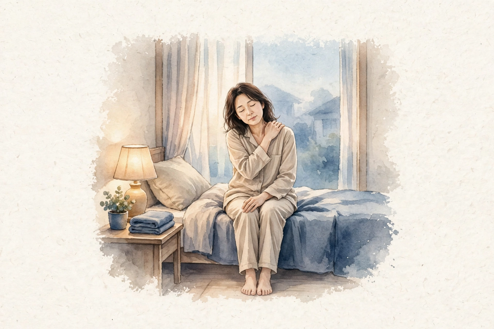

芦屋で朝に気になる肩こりと首の重さ｜起き抜けの過ごし方とセルフケア、受診の目安

「昨夜は眠れたはずなのに、朝起きたら肩が重い」「首が回しにくく、着替えのときに肩まわりが固く感じる」——そんな起き抜けの感覚が気になる方はいませんか。肩こりや首の重さそのものは一日のどの時間帯にも表れる感覚ですが、朝は、眠っている間の姿勢や寝具の合わせ方、前日の過ごし方が重なり、目覚めた直後に意識しやすい時間帯だと言われています。この記事では、朝に感じやすい肩こりと首の重さの一般的な解説と、起き抜けの場面から考えられる要因の整理、起き抜けに取り入れられるセルフケア、受診の目安をまとめました。デスクワーク後の肩こりに絞った内容はコラム「芦屋でデスクワーク後に気になる肩こり」、座り仕事後の首こりに絞った内容はコラム「芦屋で気になる首こり」で整理していますので、この記事では「朝・起き抜け」に注目して見ていきます。
肩こりと首の重さとは — 朝に感じやすい感覚を整理する
ここでいう「肩こりと首の重さ」は、肩から首、背中の上部にかけて、重だるさや張り、回しにくさを感じる状態を指す、一般的な表現です。鋭い痛みとは異なり、「なんとなく肩が重い」「首が固まったように感じる」と表現されることが多く、それ自体が医学的な病名というわけではありません。
朝に肩こりや首の重さが気になる場面には、たとえば次のようなものがあります。
- 目覚めた直後から、肩や首が重だるく感じる
- 首を左右に向けたり、うつむいたりする動きがしにくい
- 起き上がって着替えるまでの間、肩まわりが固いように感じる
- 洗顔や髪を整えるときに、首や肩の動きにくさを意識する
- 朝食や身支度を終える頃には少しずつ気にならなくなる日もあれば、昼まで残る日もある
- 前日に長く座って過ごした日や、よく眠れなかった日の朝に意識しやすい
一時的な寝姿勢の影響として表れることもあれば、前日の体の使い方や疲れの残り方が重なって感じやすくなることもあると言われています。まずは、どんな朝に、どのくらい続くのかを振り返ってみることが、自分の状態を知る手がかりになります。朝に顔のむくみ感も一緒に気になる方については、コラム「芦屋で気になる顔のむくみ感」もあわせてご覧ください。
考えられる要因
朝に肩こりや首の重さが気になりやすくなる背景は、ひとつとは限らず、いくつかの要因が重なっている場合もあります。ここでは一般的に挙げられるものを整理しますが、特定の原因を断定するものではありません。
- 眠っている間の姿勢：うつ伏せで顔を横に向けた姿勢や、横向きで肩を下にした姿勢が長く続くなど、首や肩に偏った負担がかかる姿勢で眠る時間が長いこと
- 枕や寝具の合わせ方：枕の高さや硬さが頭と首の位置に合っていないと感じられることや、マットレスの硬さなど、寝具と体の合わせ方が背景にあるとされること
- 寝返りの少なさ：眠りが深い時間帯が続くなどして寝返りの回数が少ないと、同じ部位に負担がかかり続けることがあるとされること
- 前日の過ごし方の持ち越し：前日のデスクワークやスマートフォンの使用、家事や荷物を持つ場面などで、首や肩まわりに負担がかかっていたこと
- 夜の冷えや室温：就寝中に首や肩が冷たい空気に触れる環境が続くことや、季節の変わり目などで室温が下がること
- 眠りの質や生活リズム：就寝時刻のばらつきや、眠りが浅い日が重なること。夜の寝つきについては、コラム「芦屋で夜に気になる寝つき」もご覧ください
- 前日の活動量の偏り：日中に体を動かす機会が少ない日が続いたり、逆に休日にまとめて動いたりするなど、活動量に偏りが出ること
なかには、首の骨や関節、神経などに関わる病気や、歯やあご、目など首以外の部位の状態が背景にある場合もあります。重さだけでなく痛みやしびれをともなう場合や、長く続く場合は、自己判断で済まさず医療機関で確認することが大切です（受診の目安は後述します）。
セルフケア — 起き抜けに取り入れられる工夫
起き抜けのセルフケアは、起きてすぐに大きく動かすよりも、布団の中やベッドの端で小さく始めるのが取り入れやすいものです。痛みのない範囲で、無理なく取り入れられる工夫を挙げます。
- 布団の中で小さく目覚めさせる：目覚めたらすぐに起き上がらず、仰向けのまま両肩を耳に近づけてそっと下ろす動きを数回繰り返す、首を左右にゆっくり小さく倒すなど、小さな動きから始めます。強く回したり、勢いをつけたりすることは避けます。
- 起き上がり方を一段階はさむ：仰向けからいきなり起き上がらず、一度横向きになってから、腕で体を支えながらゆっくり起き上がります。ベッドや布団の端に座って深呼吸をしてから立つと、動き出しが慌ただしくなりません。
- 温める時間を朝の支度に組み込む：洗顔やシャワーの際に、首の後ろや肩に温かいお湯や蒸しタオルをあてるなど、朝の支度の中で温める時間をつくります。熱すぎる温度は避け、様子を見ながら行います。
- 肩甲骨まわりをゆっくり動かす：座ったまま、両手を肩に添えて肘で小さな円を描く動きや、両腕を前で組んで背中を丸める・胸を開く動きを、呼吸に合わせてゆっくり行います。
- 枕と寝姿勢を一度見直す：朝の重さが続く場合は、枕の高さが頭と首の位置に合っているか、横向きと仰向けで感じ方が違うかを振り返ります。寝具を替える場合は、一度に大きく変えず、タオルの重ね方などで高さを少しずつ調整する方法もあります。
- 首や肩を冷やさない工夫をする：就寝時に首まわりが冷たい空気に触れやすい場合は、室温や寝具の掛け方を見直す、首まわりを覆う寝間着を選ぶなどの工夫も挙げられます。
- 日中の区切りもあわせて持つ：朝だけでなく、日中も1時間に一度を目安に立ち上がって肩を回すなど、同じ姿勢のまま過ごさない区切りをはさむと、前日の持ち越しに気づきやすくなります。
- 重さの出方を簡単にメモする：「よく眠れた日の朝は軽い」「枕を替えた週から気になる」など、朝の感じ方と前日の過ごし方を簡単に残しておくと、自分の傾向を知る手がかりになり、受診の際にも伝えやすくなります。
大切なのは、一度に全部を変えようとしないことです。布団の中の小さな動きひとつ、枕の高さの見直しひとつから試し、自分の生活に合うものを少しずつ残してみてください。痛みやしびれがあるときに無理に動かしたり強く押したりすることは避け、まずは休むことを優先しましょう。週末の過ごし方から肩こりを見直したい方は、コラム「芦屋で週末に整えたい肩こり」もご覧ください。
動画で見るセルフケア
このページのセルフケアは、動画でも紹介しています。動きの流れを確認しながら、無理のない範囲でどうぞ。
受診の目安
次のような場合は、整形外科など医療機関への相談を検討してみてください。
- 首や肩の痛みが強く、首を動かすことや日常生活に支障が出ている
- 腕や手のしびれ、力が入りにくい感じがある
- 転倒やケガ、むち打ちのような出来事のあとから痛みや重さが出て続いている
- 発熱や手足の動かしにくさなど、首や肩以外の症状もともなっている
- 安静にしても症状が続く、夜間や明け方に痛みで目が覚めることが繰り返される
- 重だるさや張りが数週間以上続き、少しずつ強くなっている
- 頭痛やめまい、吐き気などをともなうことがある
こうした症状の背景には、首や肩まわり以外の要因が関係していることもあります。セルフケアは日常の工夫として位置づけ、気になる症状は医療機関で確認しておくと安心です。「寝違えただけだろう」と決めつけず、続く場合は確認することも大切な目安になります。
ステラベガのご案内 — 肩と首まわりをゆるめる休息の時間に
ステラベガは、芦屋市内にある女性専用のプライベートサロンです。施術歴30年のセラピストが、オイルマッサージと美容整体を組み合わせた90分コース（10,000円・税込）をご提供しています。営業は月曜〜土曜の17:00〜22:00（日曜休み）、完全予約制で、詳しい住所はご予約確定後にご案内します。完全個室ですので、人目を気にせずゆっくりとお過ごしいただけます。シャワー設備のご利用については、ご利用施設により異なります。ご希望の場合はご予約時にお問い合わせください。
当サロンのお悩み別ガイドでは「肩こり・首こり」などを取り上げており、施術でのアプローチをご案内しています。施術では、カウンセリングでその日の体調や、朝の感じ方を含む日常の過ごし方、気になる部位をうかがい、首から肩、背中まわりを中心に全身のバランスを見ながら組み立てます。精油は体調とお好みに合わせてブレンドし、圧の強さは施術中も都度調整しますので、気になることがあれば遠慮なくお声がけください。施術後の過ごし方や、ご自宅で続けられるセルフケアについても、施術後にご説明します。サイト内のセルフケア資料ライブラリでは「肩こりのケア」などの資料を無料で公開していますので、あわせてご活用ください。なお、近日開院予定のため、ご予約の受付はまだ開始していません。受付開始はこのページでご案内します。料金や営業時間の詳細は料金・営業時間のページでご確認ください。
なお、当サロンの施術はリラクゼーションと美容を目的としたもので、医療行為ではありません。肩こりや首の重さに対する効果を保証するものでもありません。気になる症状がある場合は、まず医療機関へご相談ください。